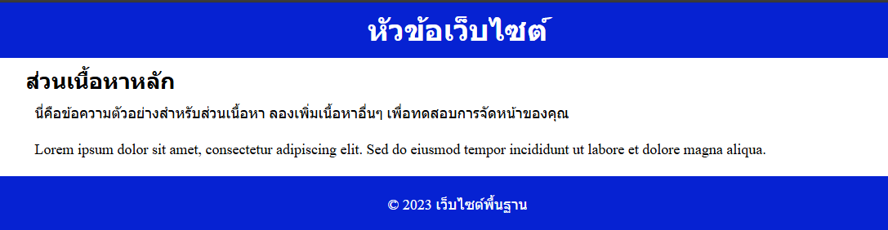

Ex.4 : CSS : beginner : จัดหน้าเว็บไซต์พื้นฐานด้วย CSS
โจทย์นี้จะให้คุณฝึกฝนการใช้งาน CSS
พื้นฐานเพื่อสร้างโครงสร้างหน้าเว็บอย่างง่ายประกอบด้วย Header,
ส่วนเนื้อหาหลัก (Main Content) และ Footer
คุณจะต้องจัดวางองค์ประกอบเหล่านี้ให้เป็นระเบียบและน่ามองโดยใช้คุณสมบัติ
CSS ต่างๆ เช่น การจัดบล็อกพื้นฐาน หรืออาจจะลองใช้ Flexbox
เพื่อการจัดวางที่ยืดหยุ่นมากขึ้นสำหรับผู้เริ่มต้น
สิ่งที่โจทย์ต้องการ:
- สร้างไฟล์ CSS ชื่อ style.css และลิงก์เข้ากับไฟล์ HTML ที่ให้มา
-
กำหนด CSS reset พื้นฐานให้กับ body หรือ * เช่น margin: 0; padding: 0;
box-sizing: border-box;
-
จัดรูปแบบ header ให้มีพื้นหลัง สีข้อความ และ padding ที่เหมาะสม (เช่น
สีพื้นหลังเข้ม ข้อความสีขาว)
-
จัดรูปแบบ footer ให้มีลักษณะคล้ายกับ header (เช่น สีพื้นหลังเข้ม
ข้อความสีขาว)
-
กำหนดความกว้างสูงสุด (max-width) ของเนื้อหาหลัก (main)
และจัดให้อยู่กึ่งกลางหน้าจอ (เช่น max-width: 960px; margin: 0 auto;)
- เพิ่ม padding รอบๆ เนื้อหาในส่วน main เพื่อให้อ่านง่ายขึ้น

https://github.com/6740011062/ApisraWebPortfolio.git